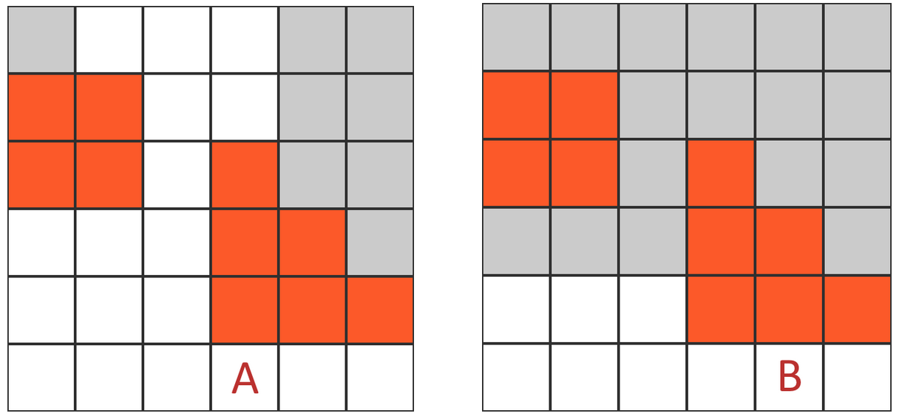
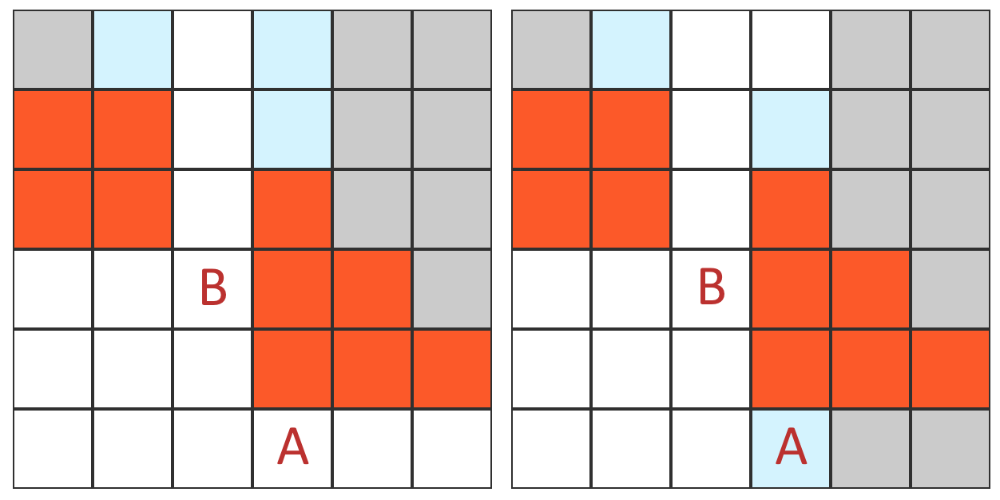

Introduction
DungeonStrike is a modern fantasy collectable card game for two players. It focuses on turn-based squad combat. One player, called the Champion, controls a team of warriors who are fighting to survive in a dungeon. She is pited against the hordes of monsters in the dungoen controlled by the second player, the Master of the Dungeon. To succeed, players will need to use extraordinary abilities, powerful equipment, and curry divine favor.
Setup
Each player shuffles their main deck and draws 7 cards. The Champion shuffles her Equipment deck and sets it aside, and then places her warriors onto the dungeon's starting location. Each player, starting with the Master, may choose to take a "mulligan" by discarding any number of cards from their hand and then drawing that many cards. The game then begins.
Game Structure
The game is played over a series of rounds which follow a consistent structure. During a round, each character gets a turn in decreasing order based on their Agility attribute. The term "character" is used to refer generically to either a warrior or a monster.
Beginning of Round Step
At the beginning of a round, each player draws a card from their main deck (the Champion deck or the Master deck, respectively). The player then gains a quantity of essence based on the number of links they have. One (time marker) is also removed at this point from each card in play with one or more on it. In Agility order, each character takes a turn.
Beginning of Turn Step
During their turn, characters gain a quantity of (movement) equal to their movement speed, and can take one standard action and any number of quick actions. Movement and actions can be done in either order, but must be performed atomically.
Standard Actions
Each turn, a character can perform one of the following standard actions.
Sprint Action
The character gains additional equal to its movement speed and can spend it now. See the Movement and Distance section for more information.
Attack Action
The character uses its equipped weapon to attack an enemy in range, dealing damage if a hit is scored. See the Combat section.
Ability Action
The character uses an ability with the "Action" subtype, paying any other costs as required. Other types of abilities do not require spending an action. Refer to the Abilities section.
Hold Action
The character stays on watch, prepared to respond to enemy activity. It may get an opportunity for a reaction to enemy activity. See Reactions.
Link Action
By playing a Link card and paying its costs (if any), the character grows their team's connection to one of the four gods. For a standard link card, the player immediately gains one point of essence of the corresponding domain, and will continue to gain essence each turn for each link they have. Taking the link action may cause a nearby group of monsters to activate.
Quick Actions
Characters can also take any number of quick actions on their turn in addition to their standard action.
Quick Ability Action
The character uses an ability with the "Quick" subtype, paying any other costs are required.
Equip Action
By playing an Equipment card and paying its costs, the character gains the benefits of a new piece of equipment.
End of Round Step
After all actions are finished, the end of turn step begins. Unspent are lost. If a player has more cards in hand than their hand size limit (typically 7), they discard the excess cards.
Player Decks
Players use pre-constructed decks to engage in combat with each other. Unlike in a physical card game, DungeonStrike decks contain an infinite number of copies of each card, so drawing a card does not reduce its chances of being drawn again in the future. Each in-game deck is made up from an unlimited number of copies of a player's deck shuffled together.
Each deck built by the players must have a minimum of at least 15 cards in it. For each additional 15 cards present, the deck is allowed to have an additional duplicate card, i.e.:
- Decks with 15-29 cards can only contain unique cards
- Decks with 30-44 cards can contain 2 of the same card
- Decks with 45-59 cards can contain 3 of the same card
- Decks with 60-74 cards can contain 4 of the same card
Champion Decks
The Champion creates two distinct decks before the game. The Champion deck provides extraordinary abilities for each warrior, while the Equipment deck is used to supply the equipment that can be found in dungeon.
The Champion Deck
The Champion deck contains cards which grant special abilities to warriors. It also contains Link cards, which the Champion can play to increase her divine connection and gain essence.
The Equipment Deck
The Equipment deck contains equipment cards which will be discovered throughout the dungeon. Whenever a monster is killed, the Champion gains a random Equipment card from their deck with an equipment level equal to the level of the monster. If no card of an appropriate level is available, lower-level equipment is substituted instead.
Master Deck
The Master deck is made up of cards that grant monsters special abilities, as well as link cards, and it generally follows the same deck construction rules as the Champion deck. Each Master deck is associated with four distinct monster types, which impacts the monsters the Champion will encounter during the game as described in the Dungeon Generation section. Only one of the four monster types can be a Mythical monster type.
Unique Ability Cards
Some monsters have unique abilities that are associated wiht their monster type, represented by a unique ability card. Normally, the Master can have at most one unique ability card at a time. When a monster with such an ability is activated, the Master gets a random unique ability card for that monster if he does not already have a unique ability card in hand. Whenever a unique ability is played, the Master automatically draws a new unique ability corresponding to one of the active monsters. The Master must immediately discard a unique ability card if the last monster of its corresponding type dies.
Dungeon Generation
The dungeon is the arena of combat in DungeonStrike. As the game proceeds, the dungeon layout is randomly generated in sections called tiles. Each tile has a 50% chance to contain a squad of monsters drawn from the Master's monster type choices.
Activating Monsters
When a warrior comes within line of sight of a monster or attacks a monster, the monsters in its squad are activated, meaning the Master gains control of them. When a new squad is activated, the turn immediately ends.
Card Types
There are five different types of cards in DungeonStrike, which can be further subdivded into several subtypes. The four fundamental card types are Characters, Abilities, Links, and Equipment.Character Cards
Warrior Cards
Warrior cards describe each of the Champion's warriors in the dungeon. They list the Attribute Scores for the warrior, as well as dervied information such as their current attack score, HP, hit damage with currently-equipped weapon, and defense score. Every warrior is associated with a specific character class as well as a specific domain.
Monsters
Monster cards represent Monsters in the arena. Monster cards list the same information as Champion cards. There are two types of monsters: regular monsters are very similar to Warriors, in that they have a character class and a domains and can use Abilities as normal. There are also Mythical monsters which can use any type of ability.
Ability Cards
Action Abilities
An ability with the "Action" subtype is one which requires the character to spend an action to use it.
Quick Abilities
An ability with the "Quick" subtype can be used by a character during their turn and does not require an action. Quick abilities can also be used on an opponent's turn as a Reaction if the user took the Hold action on their turn.
Link Card
Link cards are used to create Links. They are the primary way for player to gain essence, which they can use to activate abilities.
Equipment Cards
Equipment cards are used to give a character an ongoing bonus. Equipment can be equipped (after paying any costs) as a quick action - spending a turn is not required. The Champion gains equipment by killing monsters. The Master plays equipment cards in his Master deck, and can equip any monster whose monster level matches or exceeds the equipment level.
Character Classes
All characters in DungeonStrike belong to one of four character classes. Classes determine what starting weapon a character has. Many ability cards are also restricted to only being usable by a specific class of character.
Samurai
The Samurai class is for creatures that want to get up close and personal. Samuari wield melee weapons or short range guns, and use magic which focuses on enhancing their personal combat abilities.
Warmage
The Warmage is the quintessential magic user. They provide the firepower to back up the squad's activities. They specialize in raining area-of-effect damage down on enemies, and specialize in explosive weapons.
Wraith
Wraiths lurk in the shadows, waiting to methodically strike a killing blow from afar. They specialize in long range weapons, and their stealth makes them extremely potent allies.
Sentinel
Sentinels provide defensive support and healing for the squad. They use magic to protect their allies and themselves, but they're still quite capable of holding their own when fighting on the front lines.
Movement and Distance
When a character takes a turn, it gains (movement points) equal to its movement speed (half its Agility attribute, rounded down). Characters can move a number of squares by spending an equal number of movement points, but moves must be continuous (it's not possible to partially move and then decide to move further or to abort the movement halfway through). Characters cannot move into blocked squares.
Some actions, such as attacking with certain weapons, have a speed penalty associated with them. Because these actions take longer than normal actions, movement points must be spent to complete the action.
Line of Sight is checked for each square during movement, and entering the line of sight of an enemy who has taken the Hold action can immediately provoke a Reaction.
Distance is calculated by counting the squares on the path between the origin and destination. Diagonals are counted in alternating fashion, such that the first diagonal move counts as one square and the second counts as two. The diagrams below illustrate the distance between the A square and various other squares.

Attributes
All characters in DungeonStrike have 3 common attribute scores which describe their ability to perform various game actions. These attributes are:
- Agility, which captures the character's reflexes, dexterity, and speed. Characters with a higher agility have better aim and react faster.
- Fortitude, which captures the character's constitution, brawn, and strength. Characters with a higher fortitude have more health.
- Mind, which captures the character's intellect, charisma, wisdom, cunning, and knowledge. Characters with a higher mind score are better at using some abilities and at resisting certain types of mental attacks.
Some in-game effects reduce a character's attributes instead of directly damaging that character. This is called attribute score damage. Until the damage wears off or is removed, the character functions as if it has the new lower score in the indicated attribute. If any of a character's attribute scores falls below zero, the score is set to zero and the character will be unconscious and at risk of dying until the attribute damage is healed.
Attribute Checks
Many game situations call for an attribute check to resolve the outcome of a particular action. In order to make an attribute check, start with the character's attribute score and add any bonuses or penalties to the score as appropriate to get an attribute target. Finally, roll a 20-sided die. If the number rolled is lower than or equal to the attribute target, the result of check was success.
For example, a character attacking might have an Agility of 13 and may have a +2 bonus to hit. Adding in the bonus means the agility target is 15, so the character must roll 15 or less to score a hit.
Opposed Attribute Checks
Some situations involve a contest between two different characters's attributes. In situations like this, both characters make opposed attribute checks, with the winner being the character who passes the attribute target by the largest amount. For example, two characters arm wrestling would make opposed checks against their Fortitude attribute. The winner is the character whose roll is lower than their fortitude-based attribute target by the largest amount.
Combat
Combat takes place on a standard grid (potentially three-dimensional), and primarily involves resolving attacks. There are five steps involved in making an attack: checking line of sight, checking range, checking cover, rolling for a hit, and rolling for damage.
Line of Sight
A character can only attack or use an ability which targets an enemy if it has line of sight from its current square to a square containing that enemy. Similarly, area attacks require line of sight to the target square of the attack.
Line of sight exists if a line can be drawn from one of the closest corners of the square containing the attacker to one of the closest corners of the square containing the defender without running through a full cover square (partial cover never obstructs line of sight). Running along the edge or through the corner of a full cover square is not enough to obstruct line of sight, the line must intersect the interior of the barrier.
In the examples below, orange squares represent full cover barriers. White squares are ones where the characters at A and B respectively have line of sight, and grey squares are ones where they do not have line of sight.

Cover
Various pieces of the environment can provide cover to make characters harder to hit. There are two types of cover, called partial cover and full cover, which grant different levels of protection. A character is in cover if a line drawn from an attacker-chosen corner of the attacker's square to a defender-chosen corner of the defender's square intersects the interior of an obstacle, with the type of cover depending on the type of the obstacle. Unlike line of sight, cover is not symmetrical. Below, light blue squares have full cover from the character at A in the first example and from the character at B in the second example. Note that A has full cover from B, but not vice versa.

Attacks against a character in full cover are made at a -8 penalty to hit. Attacks against a character in partial cover are made at a -4 penalty to hit. Some attacks, called area attacks, ignore cover.
Range
Weapons and abilities have a maximum range of 16 squares, beyond which they cannot hit. They can also have a short range multiplier or a long range multiplier which impact their accuracy at various distances. All weapons have the same accuracy at a distance of 8 squares. Shots closer than that are called "short range" and shots further away than that are called "long range".
To find the range bonus or penalty for a shot, multiply the range multiplier by the absolute distance away from 8 squares. For example, if a weapon has a "1x short range" multiplier and a shot is being taken from 2 squares away from the target, the aim bonus is +6. Range penalties also exist. For example, a "-2x long range" multiplier imposes a penalty on long range shots. A shot taken from 10 squares away with such a weapon would have a -4 penalty to aim.
Appendix A contains a complete range bonus and penalty table for several common weapon types.
Hits and Damage
To determine if an attack is a hit, the attacker makes a standard agility attribute check, applying the various modifiers as appropriate. On success, the attack is a hit. The most common modifiers that affect attack accuracy are:
- Range, with the specific modifier depending on the weapon, see Range.
- Cover, -4 penalty if the target has partial cover and -8 if the target is in full cover, see Cover.
- If the attack is a reaction attack, the attacker takes a -4 penalty to hit.
Area attacks do not need to roll for hits: they always hit if they are within 16 squares and have line of sight to the target.
The effect of a hit being scored depends on the type of attack. For basic weapons, the weapon damage will be specified in terms of damage dice to roll to calculate damage.
Appendix B contains a table of the expected damage output for an attack with various hit modifiers and damage dice.
Damage Reduction
Some abilities and equipment like armor provide damage reduction. When a character suffers a hit, their damage reduction is subtracted from the total damage that is being dealt. Damage reduction can also be associated with only a specific type of damage, such as fire damage. For example, a character with a damage reduction of "-5 Fire" would only take 7 damage if struck with an effect which would normally deal 12 points of fire damage. It is also possible to have damage immunity, which is effectively infinite damage reduction.
Health, Unconsciousness, and Death
Characters have two basic values called their current health and their maximum health. Both values are initially equal to their fortitude attribute. Health represents the maximum amount of damage they can sustain before falling unconscious, with current health decreasing whenever damage is suffered. Max health can be increased by certain abilities and equipment, and it can also decrease, e.g. due to ability score damage. Characters can never have more health than their maximum health, and by default when maximum health increases, the character's current health increases by the same amount. When a character falls unconscious, it remains at 0 health and cannot sustain further damage or take any actions. Each turn, the character has a risk of permanently dying.
Instead of taking normal moves and actions, an unconscious character makes a Fortitude check each turn. The check is initially made at +5 bonus, but this modifier decreases by 1 for each additional turn the character remains unconscious and can eventually become negative. If the check fails, the character dies permanently. If the character is healed above 0 health, it stops needing to make these checks and can once again function normally.
Abilities
Abilities in DungeonStrike are represented by ability cards. Each ability card belongs to one of four domains, each associated with one of the four Gods: Aeris, Petra, Ignis, and Aquis.
All ability cards have a cost printed on them, which must be paid before the ability can be played. The most common type of cost is an essence cost. In order to use such an ability, the character must spend essence equal to the cost from its essence pool.
Links
The standard way of gaining essence is by creating Links. A standard Link provides one essence point of one specific domain for its controlling player when it is established, and will subsequently provide essence for its controller during each beginning-of-turn step. Other types of Links exist which provide multiple types of essence or which have bonus effects.
Effect Resolution
Using an ability or activating an effect follows a sequence of steps:
- The player announced which character is using the ability or activating the effect and the name of the effect, revealing the card if necessary.
- If the ability offers a choice of multiple different effects, they announce which effect or effects will be used.
- The player pays any costs required. If they wish to add any optional effects (see Reading an Ability Card), they announce which ones at this time and pay any costs associated with them as well.
- The player selects a target for the ability which meets the ability's targeting requirements, if any.
- The effect is put onto the stack to be eventually resolved.
After the stack is resolved, the text instructions on the ability card are followed in the order in which they are printed. Choices like targeting are again checked for legality, and instructions on an ability card which attempt to interact with no-longer-legal targets do not resolve.
If two effects are created simultaneously, effects created by the active team go on the stack first in timestamp order, meaning that effects created by ability cards played earlier go onto the stack first. Effects created by the inactive team are then added to the stack in the same order.
Old
Rules
Old
Rules
Old
Rules
Old
Rules
Old
Rules
Setup
Players decide who will be the Champion and who will be the Master. The Champion receives 4 mana to start, and the Master receives 4 gold. The Master shuffles his deck and draws 7 cards.
The Champion shuffles her Spell deck and draws 5 cards. She then sorts her Equipment deck into piles by equipment level and shuffles each pile. She draws up to 2 cards from the level 1 Equipment deck.
The Master may then elect to mulligan by setting aside two or more cards from his hand, drawing one less card than the number discarded, and then shuffling the set aside cards back into his deck. After the Master mulligans, the Champion can mulligan Spell cards in a similar manner. Equipment cards cannot be mulliganed.
After resolving mulligans, the Champion may put the Equipment cards from her hand into play. Finally, three starting Standard Room cards are put into play. Two are placed face-down and one is placed face-up. The face-up room becomes the first active room.
Important Vocabulary and Symbols
Vocabulary
- Active Room: The room the Champion is currently in.
- Empty: A room which has no face-up Threat cards in it.
- Equipment Level: Rank indicator on equipment which indicates its power.
- Explore: The act of moving to a new room.
- Gold: Currency used by the Master to pay for his schemes.
- Interrupt: A card which can be played at any time, not just on a player's turn.
- Mana: Represents magical energy used by the Champion to cast her spells.
- Room: A distinct location in the dungeon represented by a card.
- Spell: Card representing a magical effect used by the Champion.
- Threat: An obstacle in a room, such as a monster or a trap.
Symbols
- refers to a quantity of 3 mana or 3 gold.
- refers to an action point, spent by the Champion to perform actions.
- refers to an effect which can be produced once, or once per turn.
- refers to an effect which can be produced any number of times.
- refers to a time marker, removed from cards at a rate of 1 per turn.
- refers to a charge marker, placed on cards which can be used a limited number of times.
Master Cards
Room Cards
Orcs have +1 to Attack.
Room cards are played by the Master to represent locations in the dungeon. They are normally put into play face-down and are turned face-up when the champion explores them. At the beginning of his turn, the Master gains gold for each room card in play.
During his turn, the master can add one new Room from his hand to the dungeon complex. Room cards have a name and often have a special effect which impacts the game. For example, the "Orcish Armory" room grants a bonus to Orc creatures deployed there.
Standard Room Cards
Gain 2 gold when revealed.
Standard Room cards are room cards that always have the same effect: the Master gains 2 gold when they are revealed. The Master's deck may contain any number of Standard Room cards.
Threat Cards
During his turn, the Master may put any number of Threat cards into play. Each Threat card must be played face-down into a specific face-down Room. New Threats cannot normally be added to the Active Room. Playing a Threat card costs 1 gold per Threat already present in the Room it is being added to.
Creatures
Creatures are a specific type of Threat which can Attack the Champion directly. When the Champion enters a room, the Master may pay the costs for any face-down Creatures in the room in order to turn them face-up. Otherwise, the Master may flip face-down Creatures by paying their costs during his Reinforcements phase.
ATK 10 DMG 1d6 HP 15 DEF 15
Attacks once when revealed
This card has the following components:
- : This is the cost in gold to reveal this Threat
- ATK 10: ATK governs how likely creatures are to hit enemies
- DMG 1d6: DMG indicates how much damage is dealt on a hit
- HP 15: HP is how much damage a creature can take before dying
- DEF 15: DEF impacts how likely enemies are to hit this creature
Information about creatures attacking can be found in the Combat section.
Traps
Traps are another kind of Threat intended to catch the Champion by surprise.
Detect 20
Champion takes 1d6 damage and cannot attack this turn
Save 15 vs Acrobatics to avoid
Traps can have the following components:
- Trigger: What causes the trap to be revealed and have its effect. If no Trigger is specified, the trap triggers when the Champion enters the room containing the trap.
- Detect Rating: For traps with a Detect number, the Champion has an opportunity to find and avoid the trap without setting it off. The Champion makes a Perception check against the detect number to determine if the trap will trigger.
- Save: If the trap does trigger, the Champion may still be able to make a saving throw to avoid some or all of the effects of the trap.
- Disable: Some trap effects can be prevented by disabling the trap. The Champion makes a Mechanics check to attempt to disable it.
Effect Cards
Effect cards can be played by the Master at (almost) any time to interfere in the Champion's plans. Similar to the Champion's Spell Cards, Effects can be Immediate or Ongoing.
The creature roars with fury and then leaps towards its enemy to make an attack. It receives -5 to hit but deals +1d6 damage.
Champion Cards
Character Card
The Champion's Character card represents their identity within the game.
FORT 10 MIND 13 AGL 15
Schools: Aquis (+1), Ignis
Each Character card indicates their basic Attributes. Characters are also associated with one or more Schools of magic. Somtimes, these schools have an associated school bonus, which grants the Champion the ability to use mana from that school more efficiently.
Spell Cards
Spell cards are the Champion's primary way of surviving the dungeon. She casts spells by spending mana.
Attack Spells
To cast an Attack spell, the Champion makes an attack roll to hit an enemy creature. If the attack hits, the spell takes effect.
A jet of white-hot flame shoots from your outstretched hand towards your enemy, striking home for 2d4 fire damage.
Deal N additional fire damage.
Some cards contain notation such as . This indicates a variable cost -- you can pick any number greater than zero for the value of N.
When the text of a card contains a character, this represents an additional one-time effect that can be created by paying the cost on the left-hand side of the arrow. If the symbol appears instead, this denotes an effect which can be created any number of times by paying the cost.
Ongoing Spells
Ongoing spells are ones which continue to have an effect after the turn when they're cast, permanently altering aspects of the game while they are in play.
Your stirring song evokes feelings of strength and bravery in your comrades.
Your allies make attacks at +4 to hit. When an ally scores a hit, they deal 4 extra damage to the target.
Interrupts
Interrupts are distinct from other spell types in that they can be played at any time, not only on the Champion's turn as an action. This can allow for a great deal of strategic flexibility with how they are deployed.
A diffuse white glow envelops your ally, renewing their strength. Pick 1:
- Your ally makes attacks at +2 to hit this turn.
- Your ally heals 5.
Some spells, like this one, allow the Champion to make choices about their effects. These choices are always made as the spell is cast.
Temporary Spells
Temporary spells are similar to ongoing spells, except that they have a fixed duration.
You summon into being a massive thundercloud, ready to hurl lightning bolts at your enemies on command.
, Remove a Attack an enemy unit, dealing 2d10 electricity damage on hit.
These spells are always put into play with a certain number of markers, typically (charge markers) or (time markers). Charge markers are removed in order to create an effect, so these cards can be used a limited number of times. Time markers are automatically removed at a rate of one per turn, so these cards exist for a limited duration.
Equipment Cards
Weapons
Armor
Other Equipment
Turn Structure
A game of DungeonStrike is divided up into a series of turns, alternating between the Master and the Champion. The Master always takes the first turn.
The Master's Turn
The Master's turn is divided into 5 phases.
Income Phase
The Master gains 1 gold for each Room card in play.
Draw Phase
The Master draws a card. If this is impossible because the Master's deck has no more cards in it, the Champion immediately wins the game.
Main Phase
The Master may:
- Play any number of Threat cards.
- Play a single Room card face-down.
- Have any Creatures in the Active Room make an Attack against the Champion.
Reinforcements Phase
The Master may flip any face-down Threat cards in revealed rooms by paying their costs.
End Phase
If there are no face-down room cards at this time, the Champion wins the game.
The Champion's Turn
At the beginning of their turn, the Champion gains 4 (actions). The Champion can take any of the following actions on their by turn by spending :
- : Draw a card.
- : Gain 1 mana.
- : Make an attack.
- : Cast a non-Interrupt spell.
- : Search the Active Room (if the current Room is empty).
- : Explore another Room (if the current Room is empty)
The Champion can also play any number of Interrupt spells on their turn without spending .
Attributes and Skills
Dice Rolling
In-game instructions will occasionally use notation like "d20" or "d12". This notation originally referred to rolling dice, but in DungeonStrike it means to draw a card from a specific deck of numbered cards. The decks contain the following values:
- d20: [1, 2, 3, 4, 5, 6, 6, 7, 7, 8, 8, 9, 9, 10, 10, 11, 11, 12, 12, 13, 13, 14, 14, 15, 15, 16, 17, 18, 19, 20]
- d12: [1, 2, 3, 4, 4, 5, 5, 6, 6, 7, 7, 8, 8, 9, 9, 10, 11, 12]
- d10: [1, 2, 3, 3, 4, 4, 5, 5, 6, 6, 7, 7, 8, 8, 9, 10]
- d8: [1, 2, 3, 3, 4, 4, 5, 5, 6, 6, 7, 8]
- d6: [1, 2, 2, 3, 3, 4, 4, 5, 5, 6]
- d4: [1, 2, 2, 3, 3, 4]
Attributes
All characters in DungeonStrike have 3 common attribute scores which describe their ability to perform various game actions. These attributes are:
- Agility, which captures the character's reflexes, dexterity, and speed. Characters with a higher agility have better aim.
- Fortitude, which captures the character's constitution, brawn, and strength. Characters with a higher fortitude have more health.
- Mind, which captures the character's intellect, charisma, wisdom, cunning, and knowledge. Characters with a higher mind score are better at a variety of skills and at resisting certain types of mental attacks.
Some in-game effects reduce a character's attributes instead of directly damaging that character. This is called attribute score damage. Until the damage wears off or is removed, the character functions as if it has the new lower score in the indicated attribute. If any of a character's attribute scores falls below zero, the score is set to zero and the character will be unconscious and at risk of dying until the attribute damage is healed.
Attribute Checks
Many game situations call for an attribute check to resolve the outcome of a particular action. In order to make an attribute check, start with the character's attribute score and add any bonuses or penalties to the score as appropriate to get an attribute target. Finally, roll a 20-sided die. If the number rolled is lower than or equal to the attribute target, the result of check was success.
For example, a character attacking might have an Agility of 13 and may have a +2 bonus to hit. Adding in the bonus means the agility target is 15, so the character must roll 15 or less to score a hit.
Opposed Attribute Checks
Some situations involve a contest between two different characters's attributes. In situations like this, both characters make opposed attribute checks, with the winner being the character who passes the attribute target by the largest amount. For example, two characters arm wrestling would make opposed checks against their Fortitude attribute. The winner is the character whose roll is lower than their fortitude-based attribute target by the largest absolute magnitude.
Skills
In addition to the three main attributes, there are six different skills in DungeonStrike that a character can specialize in. Additional ranks in a skill can be gained by discovering "skill bonus" cards which let the character add levels as desired. The six skills are:
- Athletics [Fortitude]. Used to perform actions such as swimming, climbing, lifting heavy objects, grappling enemies, punching, kicking, riding, charging, or throwing.
- Acrobatics [Agility]. Used to perform actions such as tumbling, balancing, escaping from entanglements, jumping, or tripping enemies.
- Mechanics [Mind]. Used to perform actions such as opening locks, disabling traps or understanding devices.
- Perception [Mind]. Used to perform actions such as seeing enemies from far away, sensing somebody's motives, telling whether somebody is lying, searching a room, or listening for movement.
- Stealth [Mind]. Used to hide from enemies, move silently, disguise oneself, or steal items.
- Influence [Mind]. Used to intimidate, bluff, charm, negotiate, deceive, or coerce.
Skill Checks
Each of the 6 skills is associated with a certain attribute. In order to attempt a task based on one of the skills, a skill check is made. Sometimes a check will also be made without action on the part of the character in question, this is called a passive skill check. A skill check is just an attribute check for the underlying attribute of the skill. Each level the character has in the skill in question grants a +1 bonus on the check.
Card Types
Cards in DungeonStrike are the basis of the game. They are the reward for successful adventuring -- killing enemies results in new cards for the player to add to their spell deck. There are various card types present in the game.
Action Cards
Action cards describe the basic actions in the game. They serve as reminders of the possible actions which can be taken after a move, and cannot be discarded or interacted with in any way.
Roll for an attack against an enemy with your equipped weapon. On hit, deal its weapon damage to that enemy.
Rules Text
Spell Cards
Spell cards can be cast by the player by paying the appropriate costs during their turn, or at certain other times (See Spellcasting for more information). Spells come in a variety of different types.
Spell Attack
Attack spells require the caster to roll to hit the target before their effects resolve. The attack is always made at a 1x short range bonus to hit. On a miss, the spell has no effect.
A jet of white-hot flame shoots from your outstretched hand towards your enemy, striking home for 2d4 fire damage.
: Deal N additional fire damage to your enemy.
Rules Text. Roll to hit target, then resolve this effect on success.
: Optional Effect. If you spend N mana, this effect is added to the above effect.
Spell Immediate
Immediate spells are one-time effects. The caster pays their costs, the effects resolve, and then the card is discarded.
A diffuse white glow envelops your ally, renewing their strength. Pick 1:
- Your ally makes attacks at +2 to hit this turn.
- Your ally heals 5.
Rules Text. Pick 1:
- Choice #1
- Choice #2
Spell Temporary
Temporary spells enter play with a number of markers on them, and then stay in play until the last marker is removed.
You summon into being a massive thundercloud, ready to hurl lightning bolts at your enemies on command.
, Remove a Attack an enemy unit, dealing 2d10 electricity damage on hit.
Text.
, Remove a Repeatable activated effect.Spell Ongoing
Ongoing spells stay in play after being resolved, continuing to have an impact, instead of being discarded.
Your stirring song evokes feelings of strength and bravery in your comrades.
Your allies make attacks at +4 to hit. When an ally scores a hit, they deal 4 extra damage to the target.
Text creating a continuous effect.
Equipment Cards
Equipment cards represent tools used by the character which give them special abilities and ongoing effects. See Equipment for more information.
Enemy Cards
Enemy cards represent the various foes the player can encounter during the game, describing their abilities and basic statistics.
Character Cards
Character cards represent the different characters controlled by the player, and also display their basic statistics such as attribute scores.
Reactions and the Stack
When a player casts a spell, activates an activated effect, or makes an attack the effect does not resolve immediately. Instead, the effect is put into an ephemeral area called the stack to allow the opponent to respond.
Combat
There are two steps involved in making an attack: rolling for a hit, and rolling for damage.
To determine if an attack is a hit, the attacker makes a standard agility attribute check, applying the various modifiers as appropriate. On success, the attack is a hit. If the attack is a reaction attack, the attacker takes a -4 penalty to hit. Area attacks do not need to roll for hits: they always hit.
The effect of a hit being scored depends on the type of attack. For basic weapons, the weapon damage will be specified in terms of damage dice to roll to calculate damage.
Damage Reduction
Some spells and equipment like armor provide damage reduction. When a character suffers a hit, their damage reduction is subtracted from the total damage that is being dealt. Damage reduction can also be associated with only a specific type of damage, such as fire damage. For example, a character with a damage reduction of "-5 Fire" would only take 7 damage if struck with an effect which would normally deal 12 points of fire damage. It is also possible to have damage immunity, which is effectively infinite damage reduction.
Health, Unconsciousness, and Death
Units have two basic values called their current health and their maximum health. Both values are initially equal to their fortitude attribute. Health represents the maximum amount of damage they can sustain before dying, with current health decreasing whenever damage is suffered. Max health can be increased by certain spells and equipment, and it can also decrease, e.g. due to ability score damage. Units can never have more health than their maximum health, and by default when maximum health increases, the unit's current health increases by the same amount. When a unit dies, it is placed into its owner's discard pile. If the Champion or the Master dies, that player loses the game.
Spellcasting
Spells in DungeonStrike are represented by spell cards. Each spell card belongs to one of the four schools of magic, each associated with one of the four Gods: Aeris, Petra, Ignis, and Aquis, or is a neutral spell, equally accessible to any spellcaster. Each Champion must select one of the four schools to specialize in. Spells cast from outside the chosen school of the Champion can still be cast at an additional cost.
All spell cards also have a cost printed on them, which must be paid before the spell can be played. The most common type of cost is a mana cost. In order to cast such a spell, the unit must spend mana equal to the cost from its mana pool. Units add 1 mana to their pool during the beginning of turn step.
Spell Decks
Spells are drawn from a Spell Deck which is constructed before an encounter begins. The spell deck consists of 40 cards and cannot contain more than 4 copies of the same card.
If the spell deck is empty, no further spell cards can be drawn, but the game continues as normal. During the end of turn step, if the player has more than 7 cards in hand, they discard down to a maximum of 7 cards.
Effect Resolution
Casting a spell or activating an activated effect follows a sequence of steps:
- The player announces which unit is casting the spell or activating the activated effect and the name of the effect, revealing the card if necessary.
- If the spell offers a choice of multiple different effects, they announce which effect or effects will be used.
- The player pays any costs required. If they wish to add any optional effects (see Reading a Spell Card), they announce which ones at this time and pay any costs associated with them as well.
- The player selects a target for the spell which meets the spell's targeting requirements, if any.
- The effect is put onto the stack to be eventually resolved.
After the stack is resolved, the text instructions on the spell card are followed in the order in which they are printed. Choices like targeting are again checked for legality, and instructions on a spell card which attempt to interact with no-longer-legal targets do not resolve.
If two effects are created simultaneously, effects created by the active player go on the stack first in timestamp order, meaning that effects created by spell cards played earlier go onto the stack first. Effects created by the inactive player are then added to the stack in the same order.
Deck Building
Each player in DungeonStrike utilitizes a preconstructed deck of cards, which must be built according to specific deck-building rules.
The Master builds a deck which consists of 60 cards. With the exception of Standard Room cards, no more than 4 copies of a card with a given name are allowed to be present in the deck. At most 3 distinct subtypes may appear on the cards in the deck.
The Champion builds two decks. The Spell Deck consists of 45 Spell cards. No more than 3 copies of a card with a given name are allowed to be present in this deck, and only Spell cards associated with the school or schools of magic listed on the Champion's character card may be played.
The Equipment deck consists of 30 Equipment cards. No more than 2 copies of a card with a given name are allowed to be present in this deck.
Conditions
Spells and other effects in DungeonStrike can create a variety of conditions in their targts, either temporarily or on an ongoing basis. These conditions typically cause a penalty of some type. The possible conditions are:
- Anosmic. Unable to smell. -8 to Agility checks if scent is a primary sense for the target, otherwise, -2 to Perception.
- Asleep. Unable to take any action. Any stimulus (lights, sounds, attacks) ends this condition
- Blinded. Unable to see. -8 to Agility checks if sight is a primary sense for the target, otherwise, -2 to Perception.
- Charmed. Target is controlled by creator of the effect. -2 to Agility.
- Dazed. Unable to spend .
- Deafened. Unable to hear. -8 to Agility checks if hearing is a primary sense for the target, otherwise, -2 to Perception.
- Diseased. Infected with a disease. Ongoing negative effects dependent on the specific disease.
- Fatigued. -2 to all attributes.
- Flammable. Rolls to create the "On Fire" condition made at +4.
- Frightened. -2 to Mind and Agility, replaces Intimidated. Stacks, if target would become Intimidated or Frightened, they become Terrified instead.
- Frozen. -2 to Agility, 1d4 cold damage per round.
- Immobilized. Unable to move rooms.
- Insane. Target acts randomly.
- Intimidated. -1 to Mind and Agility. Stacks, if target would become Intimidated again, they become Frightened instead.
- Invisible. Can't be seen. Enemies with sight as a primary sense take penalties as if Blinded when attacking.
- Mute. Unable to communicate or cast spells requiring verbal activation words.
- On Fire. -8 to Mind checks, 2d12 fire damage per round.
- Prone. On the ground. Can only spend to stand up.
- Restrained. Unable to cast spells requiring hand movements.
- Scentless. Does not create an odor. Enemies with scent as a primary sense take penalties as if Anosmic when attacking.
- Silent. Does not produce noise. Cannot cast spells. Enemies with hearing as a primary sense take penalties as if Deafened when attacking.
- Slowed.
- Terrified. -3 to Mind and Agility, replaces Intimidated and Frightened. Stacks, if target would become Intimidated or Frightened, they stay Terrified instead.
- Unconscious. Unable to take any action.
- Waterlogged. Rolls to create the "On Fire" condition made at -4.
- Weakened. -6 to Fortitude checks.
Equipment
Equipment represents the weapons, armor, and other tools that units bring with them into combat. Equipment cards are received as a reward for combat success much in the same way as spell cards, but equipment belongs to a specific unit and cannot be changed during gameplay, only configured outside of an individual encounter. Units are limited to at most one piece of equipment with a given equipment, except for Rings and Miscellaneous which each have 2.
Equipment Types
The following equipment types are available in DungeonStrike:
- Weapon
- Armor, Robe
- Bracers (armbands, bracelets)
- Facewear (goggles, lenses, masks, spectacles)
- Boots (sandals, shoes, slippers)
- Headwear (circlets, crowns, hats, helmets)
- Cloaks (capes, mantles, shawls)
- Rings (2 slots)
- Gauntlets (gloves)
- Amulets (brooches, collars, medals, necklaces, pedants)
- Tunics (shirts, vests, vestments)
- Belts (girdles, sashes)
- Miscellaneous (2 slots)